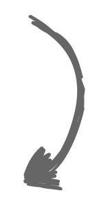
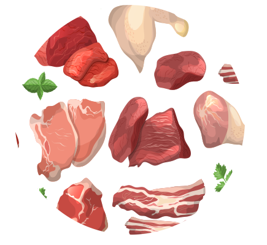
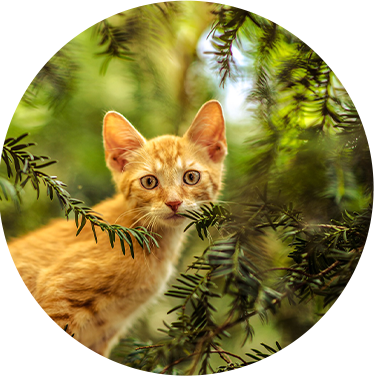

Weil wir ein unabhängiges
Unternehmen sind können wir
uns voll auf
innovative
Produktforschung
konzentrieren, um die Qualität
unserer Produkte stetig auf dem
neuesten Stand der
Wissenschaft anbieten zu
können. Dies ist uns aus
folgenden Gründen wichtig:


Vielleicht wusstest du schon,
dass je
weniger verdaulich
ein
Futter ist, desto größer die
Wahrscheinlichkeit ist, dass
deinem Haustier die
notwendigen Nährstoffe
fehlen.
Wissenschaftliche Studien
zeigen beispielsweise, dass
weniger Aminosäuren absorbiert
werden, wenn ein
Makronährstoff wie Protein
weitestgehend unverdaut bleibt.

Auch bei einer
nicht-tiergerechten Ernährung
bleibt ein Großteil der
Ballaststoffe unverdaut, wodurch
die Aufnahme von
Mikronährstoffen für dein Tier
erschwert
werden kann. Eine
artgerechte
Tiernahrung
hingegen kann
entscheidend dazu beitragen,
das
Wohlergehen deines
Tieres zu steigern,
ihm mehr
Energie zu geben und ihm dabei
zu helfen,
naturgemäßer zu leben.